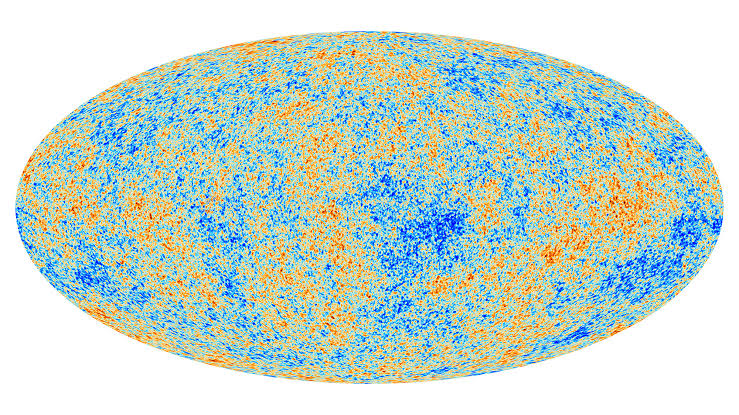

How did atoms come into existence?
Release Date: 11/21/2026---Writer: jellyfishpearl88
Release Date: 11/21/2026---Writer: jellyfishpearl88
High school physics and chemistry commonly introduce the concept of the atom. During class, have you ever thought about how atoms even formed in the first place?
In the early universe after the Big Bang, the particles couldn’t combine because of the extreme heat. When space expanded and cooled down to nearly 1-2 trillion K (Kelvin), quarks cooled enough to bind together into protons and neutrons.
During Big Bang nucleosynthesis (The first 3 to 20 minutes after the Big Bang), the universe’s temperature decreased to around 1 billion K. This cooling allowed protons to form hydrogen nuclei. Additionally, it made hydrogen the first element formed in the universe.
At the same time, that cooling temperature is also able to combine the subatomic particles (protons and neutrons) to create helium nuclei, plus other light nuclei like lithium.
When the universe reached about 380,000 years old, the temperature dropped to approximately 3000 Kelvin. The temperature allowed electrons to bond with nuclei, forming the initial stable neutral atoms while releasing the cosmic microwave background radiation (The picture down below is "The Cosmic Microwave Background Radiation").

*Note: Ever since then, the universe kept expanding and cooling, reaching a current average background temperature of roughly 2.73 Kelvin (-455 °F).
Next, gravity pulled vast clouds of hydrogen and helium gas together until their centers became hot enough to ignite. Once the core reached around 10 million degrees or more, hydrogen atoms fused into helium, releasing energy, creating chemical elements, and lighting up the first stars. Inside massive stars, the nuclear fusion process combines lighter atomic nuclei (Hydrogen and Helium) into heavier ones (Carbon, nitrogen, oxygen, neon, magnesium, silicon, and iron). Iron is the star’s core. This process is called Stellar Fusion.
At the end of its life, the massive star collapses and explodes. This explosion creates the extreme heat and free neutrons needed to run the r-process, forging heavy elements and leaving behind a dense remnant called a neutron star (This process is called "Core-Collapse Supernovae").
*Note: r-Process is a set of nuclear reactions in astrophysics that produces roughly half of all atomic nuclei heavier than iron.
And readers, that’s how atoms formed. Come to think of it, every atom in your body came from the universe (like Krauss said). It's interesting how science is always connected to each other no matter what.